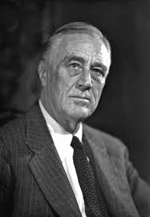
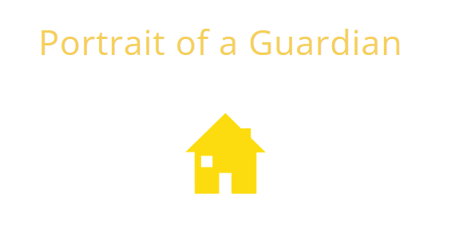

Impact of Cooking on My Academic Pursuits
Cooking has profoundly influenced my academic journey by teaching me essential skills such as attention to detail, creativity, and patience. Whether I’m perfecting a complex recipe or tackling challenging assignments, the discipline and innovative thinking required in the kitchen help me excel in the classroom. This passion enables me to manage my time effectively, approach problems methodically, and think outside the box—qualities that contribute to my academic success.

My Favorite Quote from Franklin D. Roosevelt
"The only limit to our realization of tomorrow will be our doubts of today." – Franklin D. Roosevelt
Franklin D. Roosevelt, the 32nd President of the United States, led the nation through the Great Depression and World War II with remarkable resilience. His leadership and commitment to overcoming adversity inspire me to confront my own doubts and pursue my academic and personal goals with determination.

Personality Assessment: Guardian
I recently took the Keirsey Temperament Sorter and discovered that I have a Guardian personality. This result reflects my natural tendencies toward organization, responsibility, and supportive qualities that help me excel academically and thrive in collaborative environments. I believe the test is valid, as it provides insights that reflect with my experiences and personal growth.